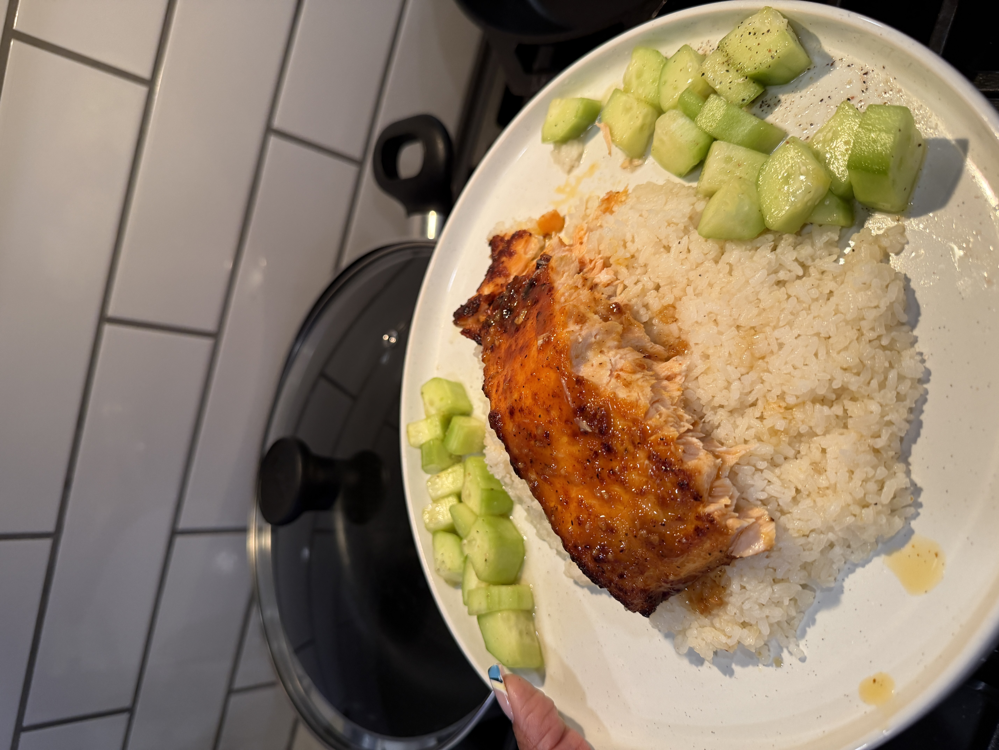

Sweet & Savory
Honey-Glazed Salmon Bowl
Tender salmon coated in a sweet soy-honey glaze, served with fluffy rice and fresh seasoned cucumbers.
⏱ About 30 min
🍽 2 servings

What you'll need ♡
- 2 salmon fillets (about 4–5 oz each)
- 1 cup uncooked jasmine rice
- 1 cucumber, thinly sliced
- 2 tablespoons honey
- 2 tablespoons soy sauce
- 1 teaspoon minced garlic
- 1 teaspoon oil
- 1 teaspoon rice vinegar
- Salt and black pepper, to taste
Let's get cooking!
- Cook jasmine rice according to its package directions.
- Mix honey, soy sauce, and garlic in a small bowl.
- Pat salmon dry, season lightly with pepper, and brush with oil.
- Air-fry at 390°F for about 7–10 minutes, depending on thickness, until the salmon reaches 145°F internally.
- Warm the honey-soy mixture in a small saucepan until bubbling, then spoon it over the cooked salmon.
- Toss cucumber slices with rice vinegar and a tiny pinch of salt.
- Serve the salmon over rice with cucumbers on the side.